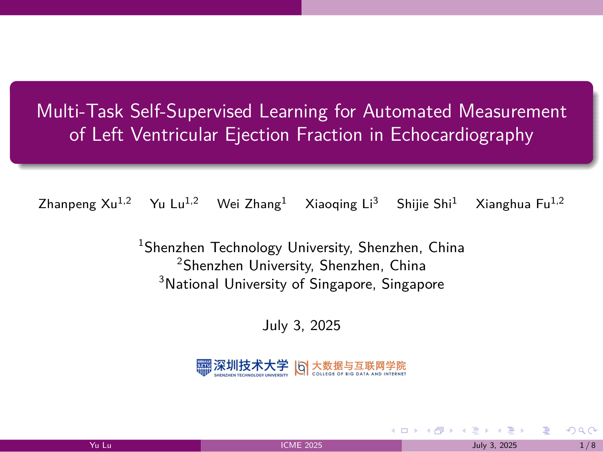
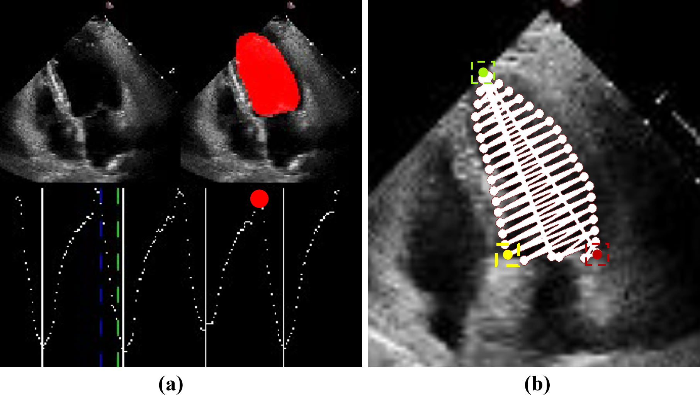
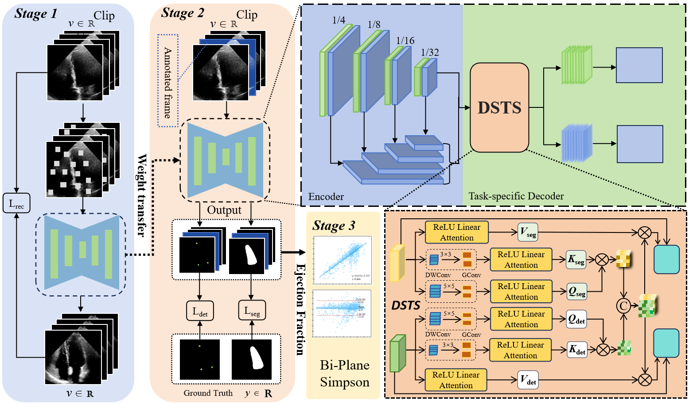
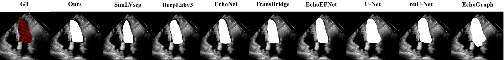
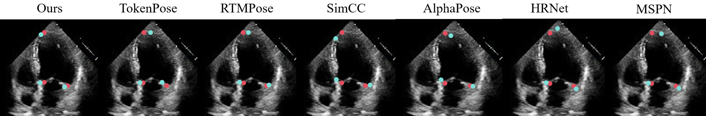
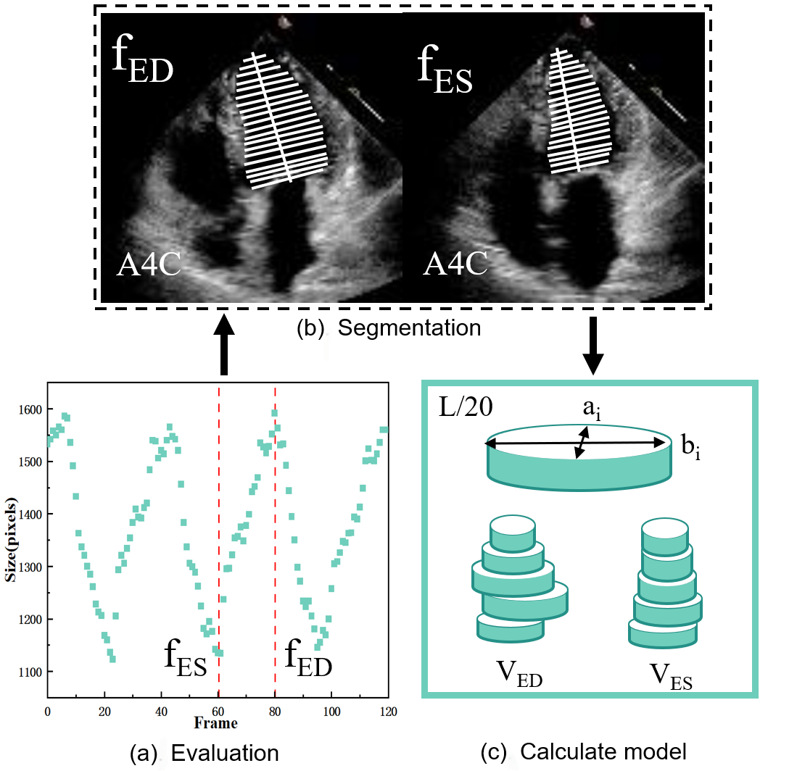
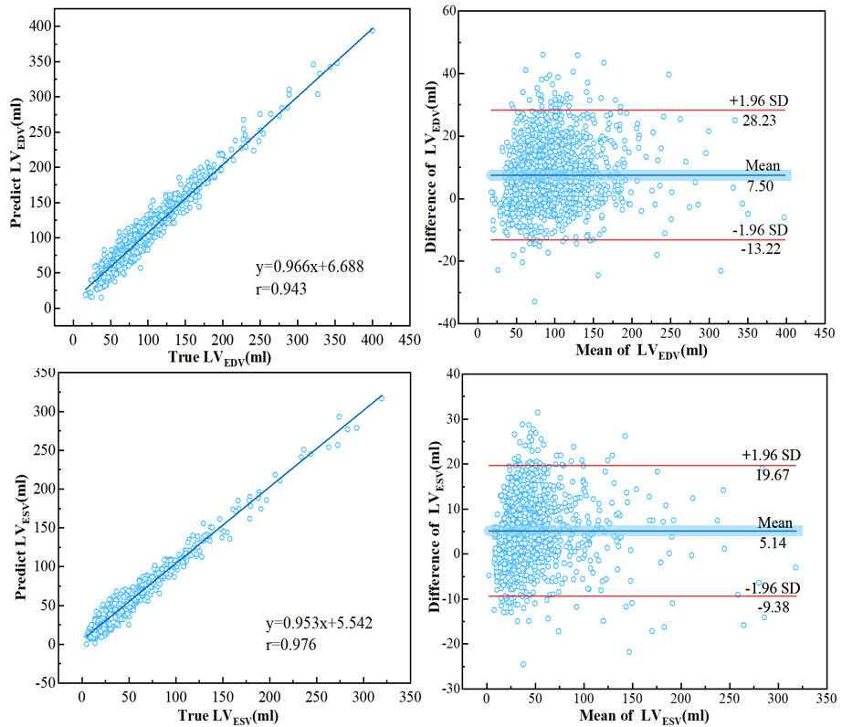
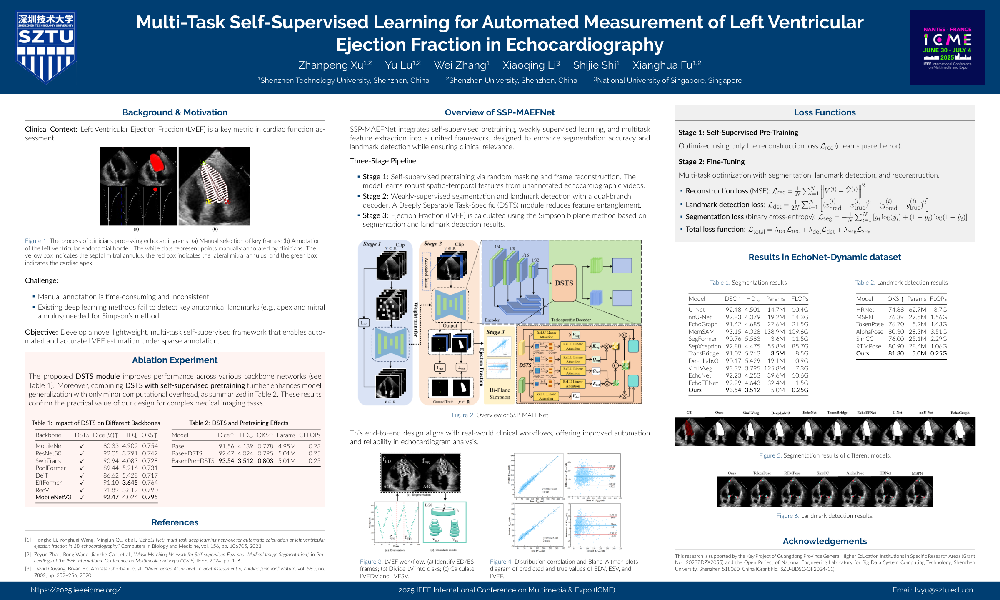

Presentation slides
Oral presentation · 8 slides

ICME 2025
1 College of Big Data and Internet, Shenzhen Technology University, Shenzhen, China
2 National Engineering Laboratory for Big Data System Computing Technology, Shenzhen University, Shenzhen, China
3 School of Applied Technology, Shenzhen University, Shenzhen, China
4 Department of Surgery, Yong Loo Lin School of Medicine, National University of Singapore, Singapore
* Corresponding authors: lvyu@sztu.edu.cn · fuxianghua@sztu.edu.cn
From sparse frame annotations to ventricular function.
Self-supervised pretraining and task-specific decoding combine LV segmentation and anatomical landmark detection in a lightweight framework for LVEF estimation.

Learn from video, separate the tasks, measure from anatomy.
Automated left ventricular ejection fraction (LVEF) measurement requires both a reliable ventricular boundary and anatomical landmarks. Segmentation alone does not explicitly locate the apex and mitral annulus, while sparsely annotated videos limit the supervision available for learning these complementary tasks.
SSP-MAEFNet combines random-mask reconstruction pretraining with a dual-branch network built on LR-ASPP-MobileNetV3. A Deeply Separable Task-Specific (DSTS) module extracts features for segmentation and landmark detection while allowing information to pass between the tasks. The resulting masks and landmarks support disk-based ventricular volume and LVEF estimation.
The main finding. On EchoNet-Dynamic, SSP-MAEFNet achieves the highest Dice and OKS among the methods compared in the paper’s main result tables, with 5.007 million parameters and 0.246 GFLOPs.
A three-stage path from echocardiographic video to LVEF.

Randomly mask 50% of each frame and reconstruct the original video. A mean squared error objective learns representations from the unlabeled video frames.
Transfer the pretrained encoder into a weakly supervised network. Labeled frames and pseudo labels support full-sequence analysis; DSTS produces task-specific features for the LV mask and anatomical landmarks.
Use the LV area curve to identify end-diastole and end-systole. Masks and landmarks define a 20-disk volume model, from which EDV, ESV, and LVEF are calculated.
DSTS uses depthwise separable and group convolutions to form query and key representations. Correlation matrices from the segmentation and landmark branches are concatenated and aligned with a 1 × 1 convolution. The combined weights act on each branch’s values to form task-specific outputs, followed by residual feature refinement.
This design connects the two tasks while reducing interference between their feature requirements.
Pretraining: 100 epochs, batch size 16, Adam, initial learning rate 0.001 with exponential decay, and weight decay 0.0005.
Fine-tuning: 20 training rounds with batch size 8. The objective combines reconstruction MSE, landmark coordinate MSE, and binary cross-entropy for segmentation.
Implementation: Python 3.8, PyTorch 1.13, and eight NVIDIA RTX 4090 GPUs, as reported in the paper.
EchoNet-Dynamic contains 10,030 echocardiographic videos at 112 × 112 resolution, with expert endocardial tracings at end-diastole and end-systole. The study evaluates both segmentation accuracy and landmark localization under this sparse annotation setting.
| Method | Dice (%) ↑ | HD ↓ | Params (M) ↓ | FLOPs (G) ↓ |
|---|---|---|---|---|
| U-Net | 92.48 | 4.501 | 14.705 | 10.434 |
| nnU-Net | 92.83 | 4.379 | 19.162 | 14.277 |
| EchoGraph | 91.62 | 4.685 | 27.580 | 21.538 |
| MemSAM | 93.15 | 4.028 | 138.863 | 109.594 |
| SegFormer | 90.76 | 5.583 | 3.643 | 11.471 |
| SepXception | 92.88 | 4.475 | 55.832 | 85.684 |
| TransBridge | 91.02 | 5.213 | 3.490 | 8.512 |
| DeepLabv3 | 90.17 | 5.429 | 19.065 | 0.863 |
| simLVseg | 93.32 | 3.795 | 125.768 | 7.31 |
| EchoNet | 92.23 | 4.253 | 39.647 | 10.619 |
| EchoEFNet | 92.29 | 4.643 | 32.429 | 1.472 |
| SSP-MAEFNet | 93.54 | 3.512 | 5.007 | 0.246 |
↑ Higher is better. ↓ Lower is better. Bold marks the best value in each column. HD: Hausdorff distance. Computational costs are reproduced from the paper.

| Method | OKS (%) ↑ | Params (M) ↓ | FLOPs (G) ↓ |
|---|---|---|---|
| HRNet | 74.88 | 62.725 | 3.732 |
| MSPN | 76.39 | 27.541 | 1.56 |
| TokenPose | 76.70 | 5.193 | 1.434 |
| AlphaPose | 80.30 | 28.326 | 3.507 |
| SimCC | 76.00 | 25.082 | 2.285 |
| RTMPose | 80.90 | 28.639 | 1.065 |
| SSP-MAEFNet | 81.30 | 5.007 | 0.246 |
OKS: object keypoint similarity. Values reproduce the main landmark comparison in Table II.

| Configuration | Dice (%) ↑ | HD ↓ | Params (M) | FLOPs (G) |
|---|---|---|---|---|
| Base | 91.56 | 4.139 | 4.953 | 0.227 |
| Base + DSTS | 92.47 | 4.024 | 5.007 | 0.246 |
| Base + pretraining + DSTS | 93.54 | 3.512 | 5.007 | 0.246 |
Adding DSTS raises Dice from 91.56% to 92.47%. Combining DSTS with pretraining reaches 93.54%, with the same reported parameter count and FLOPs as the DSTS model.
Connect pixel-level predictions to ventricular volumes.
The segmentation sequence yields an LV area curve for selecting end-diastolic (ED) and end-systolic (ES) frames. The detected apex and mitral annulus orient the ventricular long axis; the cavity is divided into 20 disks to estimate EDV and ESV.

LVEF = (VED − VES) / VED × 100%
| Measurement | Corr ↑ | LOA | PELOA | ICC ↑ |
|---|---|---|---|---|
| EDV | 0.943 | 21.057 | 23.055 | 0.943 |
| ESV | 0.976 | 14.853 | 34.066 | 0.954 |
| LVEF | 0.860 | 13.453 | 23.192 | 0.787 |
Values are reported as in Table VI. Corr: correlation coefficient. ICC: intraclass correlation coefficient. LOA and PELOA follow the paper’s reported agreement measures.

ESV shows the strongest correlation with the reference measurements. LVEF has a correlation of 0.860 and an ICC of 0.787; errors in both EDV and ESV can affect the derived ejection fraction.
The reported experiments use EchoNet-Dynamic. Extension to additional cardiac views, domain adaptation, and further clinical validation are directions for future work.
SSP-MAEFNet at ICME 2025.
Explore the oral presentation slides and the conference poster, covering the motivation, original framework, experiments, and LVEF evaluation.
Oral presentation · 8 slides

Poster presentation · Landscape PDF

@inproceedings{xu2025sspmaefnet,
title = {Multi-Task Self-Supervised Learning for Automated
Measurement of Left Ventricular Ejection Fraction
in Echocardiography},
author = {Xu, Zhanpeng and Lu, Yu and Zhang, Wei
and Li, Xiaoqing and Shi, Shijie and Fu, Xianghua},
booktitle = {2025 IEEE International Conference on Multimedia
and Expo (ICME)},
year = {2025},
publisher = {IEEE},
doi = {10.1109/ICME59968.2025.11210142},
url = {https://doi.org/10.1109/ICME59968.2025.11210142}
}This research was supported by the Key Project of Guangdong Province General Higher Education Institutions in Specific Research Areas (2023ZDZX2055) and the Open Project of National Engineering Laboratory for Big Data System Computing Technology, Shenzhen University (SZU-BDSC-OF2024-11).